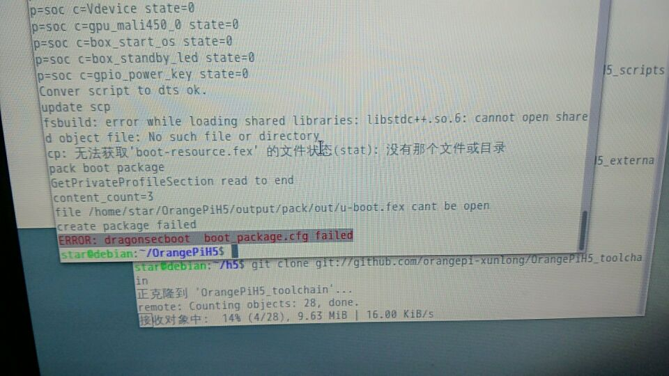

问题收集（FAQ）
随手收集下
Q: 不能启动是什么原因？
A:系统不能启动的解决方法：检查下板子的电源适配器供电是否稳定，检查下板子上的指示灯状态，那些灯是由软件点亮的（H3的网卡灯除外），如果不亮检查镜像是否解压了再烧入的xz/7z/rar/zip等是压缩格式，拔掉板子上耗电设备也可以看看。指示灯亮了屏幕是黑的请看屏幕接口，HDMI和HDMI转VGA一般没什么问题，微雪屏幕和转DVI请看本书的进阶部分的微雪屏显示及HDMI转DVI支持的文章。也可以ssh尝试连接，IP地址在路由看，或者连接板子上独立三根ttl调试针脚，定义在板子正面/背面有丝印。安卓启动卡住除了检查电源外，还可以低格卡再刷试试，安卓比较挑卡，2G-IOT经不少人验证不能从大于8G的卡启动，2G-iot不能启动建议检查跳线和拨码（1234up 5678down）靠近sdcard卡槽那边是up，2G-IOT的NAND内置了安卓，可以把跳线设到NAND启动看看，跳线定义板子上也有丝印标识。还是失败你可以试试换个电脑/板子的系统，或者换个连接的USB端口，或者换台电脑，或者换张卡，或者换个板子，或者换个电源适配器，或者换人，或者找售后，或者来波修复工具得了/。。。比如锤子。。。。当然。。这是个玩笑。。。不过真的很有用。
Q: 请问官方下载的Android源代码，固件的驱动都全吗，是不是编译完就能用啊
A:。。。没这么简单。。。你还要自己配置,比如内核配置部分，配置sys_config.fex。。。全志的东西都这套路。。。
Q:zero plus2 H5装了ubuntu server后十分钟黑屏怎么办(还装了X图形)？
A: 执行setterm -blank 0 如果setterm -blank 0失效则在cmdline定义consoleblank=0即可。H5系列在boot分区下有uEnv.txt，加入一句optargs=consoleblank=0 如果已有optags参数定义，再其后加参数即可。。。至于x图形那边，用xset工具，执行xset –dpms 看看。。。。
Q: 适合板子的铜柱该怎么买？
A: 买直径m3的，高度自己决定。
Q: 我的PC2刷了OPI官方的Ubuntu Server怎么显示器黑屏？但是有信号。
A: OPI官方的H5系列的Server版系统在bootcmd定义了console=/dev/null ，所以console没有输出到tty ，只有图形界面有输出。
Q: 2G-IOT连接屏幕白屏不能显示怎么办？
A: 安卓得升级官方1.3版镜像，目前Linux不能显示，虽然有驱动。。可能可以。。。但是我并没试过。
Q: 启动要按电源键多久？怎么好像我的板子一直没启动。。
A: 一般都是直接上电开机，启动不了建议看第一条问答。
Q: 编译H5的SDK提示无法获取boot-resource.fex
A: 先编UBOOT，不行再编译一次LINUX的选项。
Q: 编译H5SDK的UBOOT出现libstdc++.so.6缺失
A: 安装lib32stdc++6这个包。
Q: OrangePi 2G-IOT的Linux拨号后两分钟断连怎么办？
A: 在/etc/wvdial.conf后加上两行lcp-echo-interval = 0和lcp-echo-failure = 0还有/etc/ppp/options里面这俩项改成0值。
Q: OrangePi 2G-IOT烧写NAND时工具一直停在Wait for port怎么解决？
A: 去设备管理器里选择设备，找到驱动设备，右击设备，选择更新驱动程序>浏览我计算机以查找驱动程序>让我从计算机上的可用驱动程序列表中选取>从磁盘安装>选取{刷写工具目录/RDA_Android_Toolchain/USB Driver/USB-driver/{x64或x86电脑系统位数}/driver/rda_enum.inf}的驱动>RDA COM Enumerator>然后可以看到Gadget Serial(COM*)类似的驱动出现在端口（COM和LPT组）。
Q: OrangePi PC的pwm1怎么不能使用？
A: 在H3/H2+中，PWM1是不复存在的，后来的datasheet1.1修正了，pwm0又被调试口uart0复用了。（H5和A64本人暂时没去了解）
日后有时间继续补上。
似乎Gitbook能在每条右侧接近右侧调出讨论的地方。。。对哪句不满的可以发表下意见，或者你可以Fork然后发pull request(程序员姿势)
Start a *****那里输文字，。点Post发送。。。这玩意用途不明。。日后探索看看